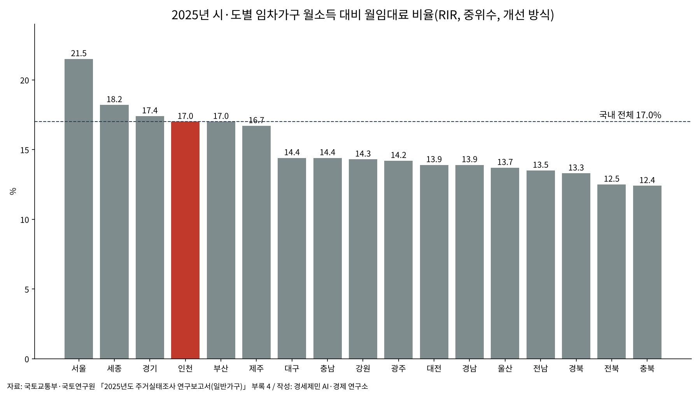
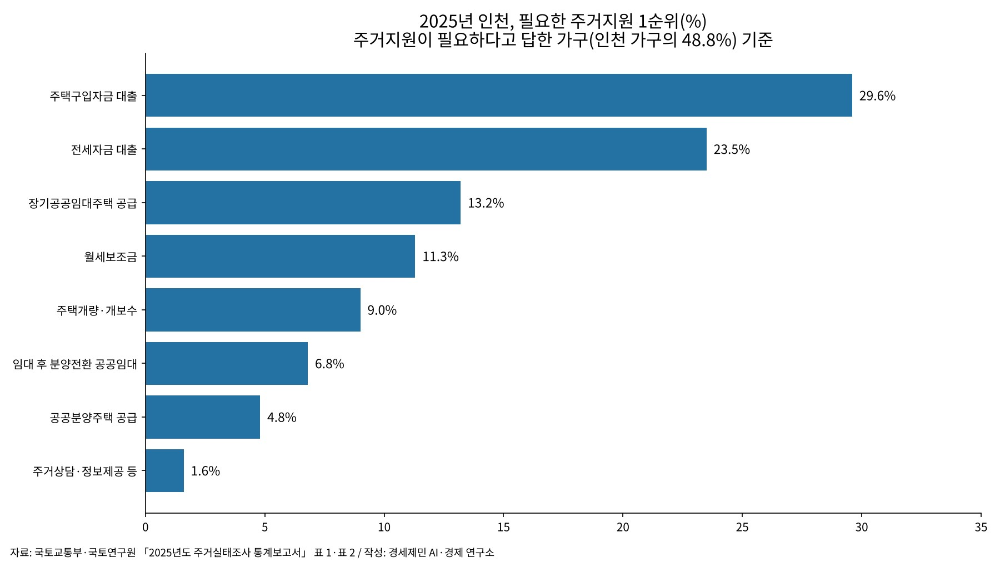
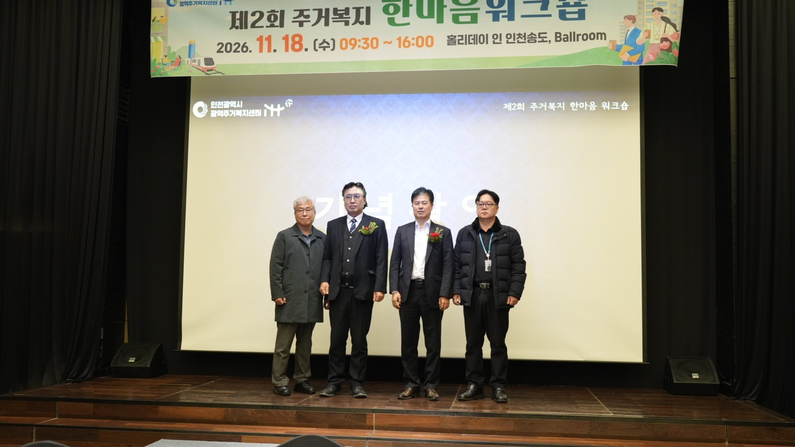

인천 세입자 주거비 부담, 월소득 17%로 상승
2025년 주거실태조사 인천 임차가구 임대료 비율 15.8%→17.0%, 주거지원 필요 48.8%
1인 14㎡ 최저주거기준 손질과 보편형 공공임대 논의 시작
AI경제저널=김갑봉 기자 | 2025년 인천 임차가구의 월소득 대비 월임대료 비율(중위수)은 17.0%다. 1년 전보다 1.2%포인트 올랐다. 2026년 11월 17일 국토교통부가 결과를 발표한 2025년도 주거실태조사 연구보고서 수치다.
국내 표본은 6만1422가구였고 인천에서는 3660가구가 응답했다. 사흘 뒤인 11월 20일 국토부는 서울 시청역 인근 상연재에서 주거복지정책 토론회를 열었다. 안건은 최저주거기준 개정과 보편형 공공임대 신설 두 가지로 잡혔다.
인천 임차가구 임대료, 월소득의 17%

국토연구원의 2025년도 주거실태조사 연구보고서를 보면 인천 임차가구의 월소득 대비 월임대료 비율(RIR) 중위수는 17.0%다. 보증금을 월세로 바꾼 금액까지 더한 임대료가 월소득에서 차지하는 몫이다. 2024년은 15.8%였다. 국내 전체는 15.7%에서 17.0%로 올랐다.
17개 시·도 가운데 서울이 21.5%로 가장 높았다. 세종 18.2%, 경기 17.4%가 뒤를 이었고 인천은 부산과 함께 17.0%였다. 권역별로는 수도권이 19.7%로 가장 높았다. 평균값으로는 인천이 19.1%에서 20.9%로 올랐다.
2025년부터 산정 방식이 바뀌어 나라 전체 전월세전환율 대신 시·도별 전환율을 적용했고 2023·2024년 수치도 새 방식으로 다시 계산했다. 국토부는 이 때문에 기존 시계열과 단층이 생겼다고 밝혔다. 옛 방식으로 따져도 인천은 15.0%에서 16.3%로 올랐다.
세입자 가운데서도 부담은 갈렸다. 국토부 발표 표를 보면 2025년 국내 신혼부부 임차가구 RIR은 20.2%, 청년 임차가구는 17.4%, 고령 임차가구는 24.7%다. 재계약 때 임대료가 오르거나 전세가 월세로 바뀔까 불안하다는 임차가구는 인천 28.6%로 국내 전체 24.6%보다 높다.
집을 자주 옮기는 쪽도 세입자다. 2년 안에 이사한 가구 비율은 국내 전체 31.2%로 1년 전 30.3%보다 늘었고 지역별로도 모두 늘었다. 점유형태별로는 월세가구가 58.2%로 가장 높았고 전세가구 49.9%, 자가가구 16.2% 차례였다.
집값 부담은 반대로 움직여 인천 자가가구의 연소득 대비 주택가격 비율(PIR) 중위수가 6.6배에서 6.1배로 낮아졌다. 인천 PIR은 2022년 7.7배까지 올랐다가 2023년 6.1배로 내려섰다. 국내 전체는 6.3배로 같았고 서울은 13.9배에서 11.7배로 내렸다. 국토부는 이번 결과를 두고 주거환경은 개선됐고 주거비 부담은 늘었다고 요약했다.
인천 가구 절반 가까이 주거지원 필요
2025년 인천 가구의 48.8%가 주거지원 프로그램이 필요하다고 답했다. 국내 전체 45.9%보다 높다. 서울 58.1%, 경기 56.1%, 전북 53.7%에 이어 17개 시·도 가운데 네 번째다. 국내 전체 비율은 2024년 38.2%에서 7.7%포인트 뛰었다.
지원이 필요하다고 답한 인천 가구는 주택구입자금 대출 29.6%를 첫손에 꼽았다. 전세자금 대출 23.5%, 장기공공임대주택 공급 13.2%, 월세보조금 11.3%가 뒤를 이었다. 국내 전체로는 주택구입자금 대출 31.2%, 전세자금 대출 21.8% 차례였다.
지원이 필요하다는 응답은 세입자 쪽이 많았다. 국내 전세가구는 68.2%, 보증금 있는 월세가구는 67.1%가 필요하다고 답했다. 자가가구는 33.2%였다. 필요하다고 답한 보증금 있는 월세가구는 전세자금 대출 28.8%, 월세보조금 27.2%를 먼저 꼽았다.
인천의 자가점유율은 2025년 61.6%로 국내 전체 59.1%보다 높다. 임차가구는 35.3%다. 서울은 자가 44.4%, 임차 53.1%로 세입자가 더 많다. 내 집을 꼭 마련해야 한다는 응답은 인천 83.0%로 국내 전체 85.6%보다 조금 낮다.

2011년 1인 14㎡ 그대로, 최저주거기준 15년 만 개정 추진
최저주거기준은 사람이 사는 집의 최소 조건이다. 지금 기준은 국토해양부가 2011년 5월 27일 공고로 정했다. 1인 가구는 14㎡, 2인 26㎡, 3인 36㎡, 4인 43㎡다. 전용 입식부엌과 수세식 화장실, 목욕시설을 갖춰야 한다.
2025년 국내 미달가구는 79만1000가구, 3.6%다. 수도권 미달 비율은 4.2%로 광역시 등 2.2%, 도지역 3.4%보다 높다. 수도권은 면적기준 미달이 3.9%로 광역시 등 1.5%, 도지역 1.6%보다 높다. 미달가구의 58.3%가 수도권에 산다.
소득 하위 가구의 미달 비율은 5.7%다. 청년가구 미달 비율은 8.2%에서 5.6%로 줄었다. 국토부는 청년가구의 아파트 거주 비율이 31.0%에서 34.9%로 늘고 주택 이외 거처 거주가 5.3%에서 3.2%로 줄어 주거면적이 넓어진 결과로 봤다.
국토부는 2011년 이후 15년 만에 이 기준 개정을 추진한다. 토론회를 알린 보도자료에서는 최소 주거면적뿐 아니라 필수설비, 구조·성능, 환경 기준 전반을 논의하겠다고 밝혔다. 국민의 전반적인 주거수준 향상과 기후재난·안전 대응을 고려했다고 덧붙였다. 담당 부서는 국토부 주거복지정책과다.
국토부 보도자료를 보면 토론회는 국토부가 주최하고 영남대 산학협력단과 LH토지주택연구원이 주관했다. 1부 발제는 서지은 영남대 교수가 맡았다. 토론에는 이길제 국토연구원 주거정책연구센터장, 이동현 홈리스행동 상임활동가, 최은영 한국도시연구소 소장이 나왔다. 김하나 서울 소셜 스탠다드 책임, 김정섭 울산과학기술원 교수, 이영석 해안건축비전그룹 소장도 참여했다.

보편형 공공임대 쟁점, 입주기준·임대료·거주기간
보편형 공공임대는 국토부가 9월 21일 주거안정플랜에서 기본방향을 밝힌 새 유형이다. 여러 계층이 좋은 집에서 오래, 감당할 만한 임대료로 사는 것을 목표로 삼았다. 국토부는 조승연 LH토지주택연구원 수석연구원이 2부 발제를 맡는다고 예고했다.
국토부가 꼽은 쟁점은 입주기준과 임대료 산정 방식, 거주기간 등이다. 국토부는 2부 토론자로 강미나 국토연구원 선임연구위원, 이강훈 참여연대 집행위원장, 허윤경 건설산업연구원 연구위원 등을 예고했다. 김이탁 국토부 1차관은 토론회를 알린 보도자료에서 보편형 공공임대의 도입과 함께 최저주거기준의 개선이 중요하다고 밝혔다.
참고문헌
- 국토교통부, 「2025년도 주거실태조사 결과」 보도자료, 2026.11.17., https://www.korea.kr/briefing/pressReleaseView.do?newsId=156789623
- 국토교통부, 「더 나은 주거환경, 더 든든한 주거안정 “최저주거기준 높이고 공공임대 선택 넓힌다”」 보도자료, 2026.11.19., https://www.korea.kr/briefing/pressReleaseView.do?newsId=156789871
- 국토연구원, 『2025년도 주거실태조사 연구보고서(일반가구)』, 국토교통부, 2026.6., https://stat.molit.go.kr/portal/cate/statMetaView.do?hRsId=327
- 국토연구원, 『2025년도 주거실태조사 통계보고서』, 국토교통부, 2026.6., https://stat.molit.go.kr/portal/cate/statMetaView.do?hRsId=327
- 국토해양부, 「최저주거기준」(국토해양부공고 제2011-490호), 2011.5.27., 국가법령정보센터, https://www.law.go.kr/행정규칙/최저주거기준
사진 출처
- [사진1] 인천도시공사, 「인천광역시 광역주거복지센터, 「2026 대한민국 주거복지 실천대상」 우수상」 보도자료 붙임 사진, 2026.11.19., https://www.ih.co.kr/main/bbs/bbsMsgDetail.do?msg_seq=2336&bcd=idtc_press
- [사진2]·[사진3] 경세제민 AI·경제 연구소 작성 도표(자료 국토연구원 주거실태조사 보고서)
- [사진4] 인천도시공사, 「iH, 「제2회 주거복지 한마음 워크숍」 개최」 보도자료 붙임 사진, 2026.11.18., 인천도시공사 누리집 보도자료
※ 이 기사는 인공지능기자 위민아이(Wemin_AI)와 협력해 작성했습니다.
관련기사
- 인천 도시재생지원센터 운영방식 검토 7년, iH와 다시 3년 위탁
- 리모델링 동의율 70%로 완화, 인천 대상 1237단지
- 전세사기 보증금 3분의 1 국가 보장 11월 13일 시행, 인천 피해 결정 3877건
- 인천 전셋값 올해 4.71% 상승, 집값의 여섯 배
저작권자 © AI경제저널 무단전재 및 재배포, AI학습 및 활용 금지